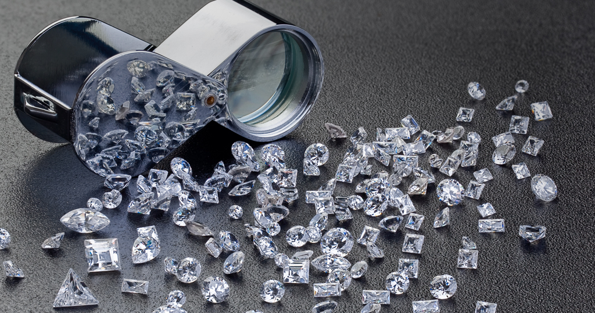

CLOSE
QUALITY ASSURANCE
品質堅持

CLOSE
品質堅持
4C標準是GIA所創立的鑽石鑑定系統，組成此標準為下列四種：克拉(Carat)、成色(Color)、淨度(Clarity)、和車工(Cut)。4C標準將各種影響鑽石價值的層面囊擴一起，進而更加精準的評價一枚鑽石，從鑽石的重量、色澤、乾淨度直到切割鑽石的技巧，也令消費者更加清晰所購買的鑽石的珍貴性。也因著此系統的便利性，使4C標準在全世界的鑽石鑑定中廣泛運用。

鑽石的重量是以克拉為單位，一克拉相當0.2g。
一克拉同時也等於一百分，也用來描述小於一克拉的鑽石，譬如0.52克拉又被稱為52分。在其它標準為相同的前提下，克拉數越高鑽石越容易聚光，進而綻放出迷人的光彩，此原因也是許多人尋找高克拉數鑽石的主因。
0.25ct
( 4.1 mm )0.5ct
( 5.1 mm )1ct
( 6.4 mm )1.5cts
( 7.4 mm )2cts
( 8.1 mm )鑽石成色的鑑定標準，對大多數的鑽石而言，取決於該鑽石的無色程度。若一顆鑽石宛如純淨的水一般無色，它將具有很高的價值。GIA的成色鑑定標準是從D(無色透明)到Z(淡黃色)，做出23個等級的系統。主要鑑定方式透過控制的照明與觀測的條件下，將鑽石與不同的比色石進行比對和鑑定。目前全世界受歡迎的等級是從D-M，依照顧客喜好和預算，做出最好的選擇。
Colorless
透明無色
Near-Colorless
接近無色
Noticeable-Color
可視顏色

每顆鑽石都是獨一無二的，均有它獨特的內含物，內含物就是鑽石的特徵，永遠找不到一顆一模一樣的鑽石。評鑑鑽石淨度的標準是以特徵的數量、大小、明顯性、本質、位置和顏色來做評估，一般而言，淨度越高也代表價值越高。大多數鑽石的內含物是不能以肉眼辨識的，國際檢驗標準是以十倍放大鏡進行鑑定，從最高級的FL到I3總共11個等級。
FL-IF
完美無暇
VVS1-VVS2
極度微量內含物
VS1-VS2
微量內含物

SI1-SI2
肉眼可能看見內含物
SI3
肉眼可看見內含物
常言：「好事多磨。」而車工是為了牽引出蘊含鑽石內璀璨光輝的重要步驟。每一項環節都極為講究，從鑽石檯子的大小，檯子與腰身的比例等。若有一條細節有毫厘之差將無法完美展現該鑽石應有的光芒。車工評級分為五個等級：極優(Excellent)、優良(Very Good)、良好(Good)、尚可(Fair)、不良(Poor)。

鑽石車工的最高評價，就是所謂的完美車工。其中最甜蜜浪漫的完美車工，應屬於八心八箭完美車工(Hearts & Arrows Ideal Cut)，此車工會令鑽石內出現燦爛的八心八箭。八心八箭代表愛情八個美麗的意境，邂逅、鍾情、暗示、夢係、初吻、纏綿、默契、山盟，也因著這象徵著愛情的八個意境，八心八箭又被稱為「邱比特車工」。同時精準的八心八箭在實際切割的過程中，極為繁複，相較於一小時左右即可完成的標準車工，完美車工需要花費四天才完工。每顆八心八箭的評價等級最少須具備有三個極優(Excellent)等級評價，除此之外，鑽石裡面的八心八箭也須在光芒、形狀、角度等細節上相互對稱，經過如此諸多嚴苛的條件鑑定皆通過後的美鑽，才能賦予鑽石最高評價「八心八箭完美鑽石」。也因眾多嚴刻的條件，能被評為八心八箭完美車工的鑽石在全球不超過1%，也相印著在全世界中，能尋找到身、心、靈都完全契合的那一位伴侶是如次幸運，而在八心八箭永恆與浪漫的光輝之下，見證這每一對情侶相依相惜的甜蜜愛情。

一般所謂的「鑽石鑑定證書」或「鑽石等級證書」，法蝶稱它為「國際鑑定證書」(International Grading Certificate)。這報告是珠寶專家們依照嚴格的分級標準和特定的環境下，仔細觀察與檢測鑽石的總結報告。其中又以GIA(Gemological Institute of America)美國寶石學院所開出的證書最具權威。自1953年起，美國寶石學院所創立的4C鑽石分級系統，也成為國際鑽石分級的指標，也令GIA成為全球最具影響力的寶石分級報告。目前全世界的鑑定所不計其數，各家鑑定機構的分級系統標準皆不同，為滿足每位客戶不同的需求，法蝶的寶石皆經過以下國外知名機構的鑑定：GIA、JII、IGI以及CGL。
 GIA 認證
GIA 認證
GIA 認證
GIA 認證
GIA 認證
GIA 認證
 JII 認證
JII 認證
 IGI 認證
IGI 認證
GO TOP
預約鑑賞